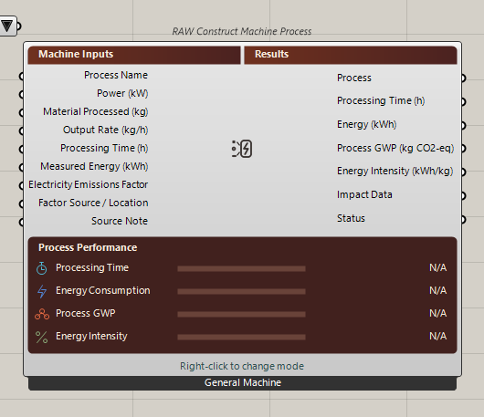
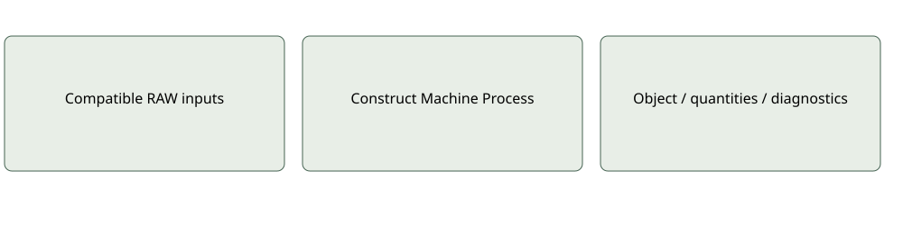

Impact
RAW Construct Machine Process
Constructs and evaluates one stable fabrication event from entered parameters and one authoritative energy route.
Energy/electricity GWP only; not a machine simulator. Constructing data and identifying a machine mode are related but different.Current compact interface
Inputs: Direct: Energy kWh. Power/time: Power kW, Time h. Rate: Power, Processed Mass kg, Output Rate kg/h.
Outputs: Process: EvaluatedMachineProcess. Optional energy, time, impact, intensity and diagnostics.
Machine type and energy route are separate. Editor stores basis, source and notes; wired overrides remain available. Energy works without a factor. Specialist inventory is partial.
Use and limitations
Optional and mode-specific ports may remain serialized when hidden. Inspect quantities, source provenance and coverage before interpreting results. A missing input is not an inferred zero.